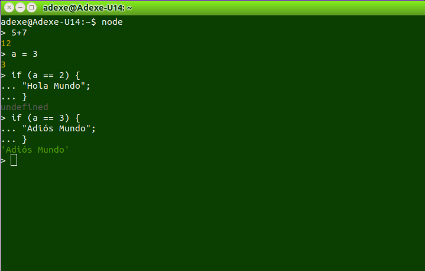

Instalación de Node.js
Para utilizar esta herramienta será necesario descargarla de la página oficial: nodejs.org/download. Según nuestro sistema operativo seleccionaremos una versión diferente. Aquí se muestra para linux que puede ser la más complicada de llevar a cabo.
Una vez descargado el archivo (.tar.gz) lo descomprimimos. A continuación abrimos una terminal presionando Ctrl+alt+T y nos situamos en la carpeta que hemos descomprimido. Una vez dentro ejecutamos los siguientes comandos:
$ ./configure
$ make
$ make install
A veces es necesario ser root para ejecutar la sentencia make install, bastaría con dar permisos de root
$ sudo make install
Con estos simples pasos ya tenemos instalado node.js en nuestra máquina. Ahora debemos comprobar que esto es cierto, para ello ejecutamos lo siguiente
$ node --version
Prueba de Node.js
Abrimos Node en la consola:
$ node
Si todo va bien nos aparece un símbolo '>' que significa que el programa ya se está ejecutando. Podemos guardar nuestro programa en un fichero ".js" y ejecutarlo desde la terminal:
$ node prueba.js
Un ejemplo de como funciona Node.js directamente desde la terminal es el siguiente:
